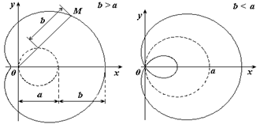

Улитка
Паскаля

Уравнение
улитки Паскаля в декартовых координатах
,
Уравнение
улитки Паскаля в полярных координатах
,
Параметрическое
уравнение улитки Паскаля
Улитка Паскаля получается при увеличении или
уменьшении радиус-вектора каждой точки окружности на постоянный отрезок  .
.
.